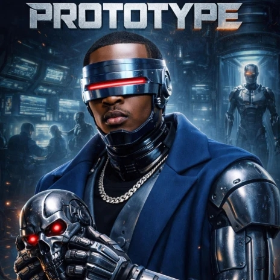
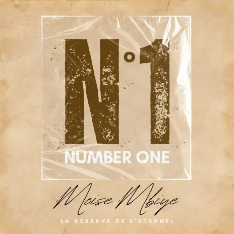
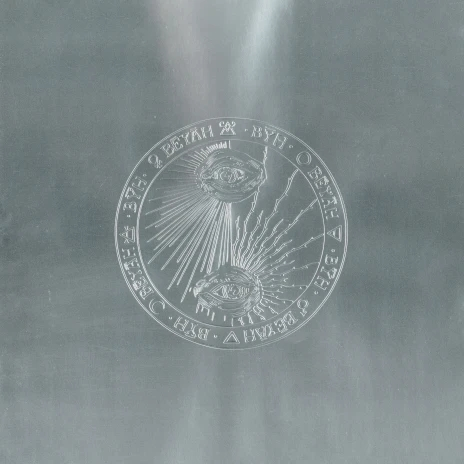
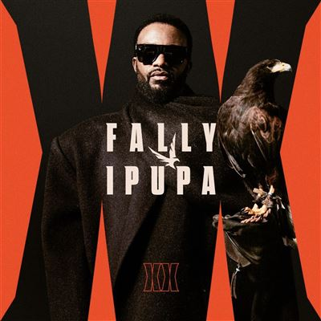
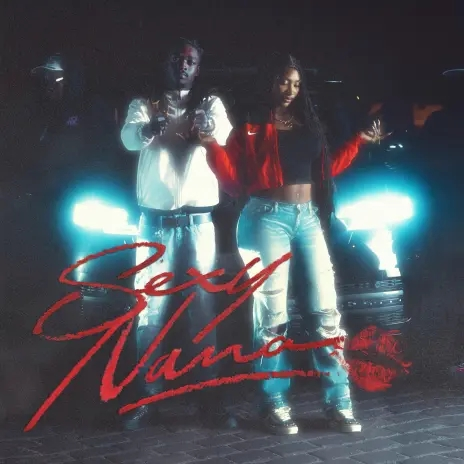
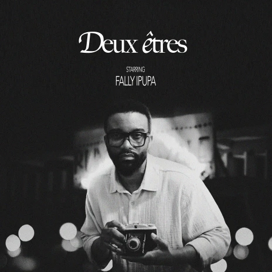

Top Albums RDC de la semaine
| # | - | Pochette | Album | Artiste |
|---|---|---|---|---|
| 1 | ➖ |

|
XX | Fally Ipupa |
| 2 | ➖ |
 |
PROTOTYPE (INDUSA) | Gaz Mawete |
| 3 | ➖ | M.I.L.S 4 | Ninho | |
| 4 | ➖ |
 |
NUMBER ONE | Moïse Mbiye |
| 5 | ⬆ +1 |
 |
BĒYĀH | Damso |
Top Titres RDC de la semaine
| # | - | Pochette | Titre | Artiste |
|---|---|---|---|---|
| 1 | ➖ |  |
KITAMATA | Fally Ipupa |
| 2 | ➖ | |
PÉPÉLÉ | Fally Ipupa & Guy2BezBar |
| 3 | ➖ | |
LOST | Fally Ipupa |
| 4 | ⬆ +3 |  |
SEXY NANA | Aya Nakamura & La Rvfleuse |
| 5 | ⬇ -1 |  |
DEUX ÊTRES | Fally Ipupa |

Les demandes de certification IMC sont officiellement ouvertes
1 Août 2026
À partir d'aujourd'hui, les artistes, producteurs et labels peuvent soumettre leurs œuvres afin d'obtenir une certification officielle basée sur leurs performances réalisées en République Démocratique du Congo.
Voir plusÀ propos de l'IMC
L'Institut Musical Congolais est une organisation dédiée à la valorisation de la musique congolaise grâce à la publication de classements hebdomadaires et à la certification des performances musicales réalisées en République Démocratique du Congo.